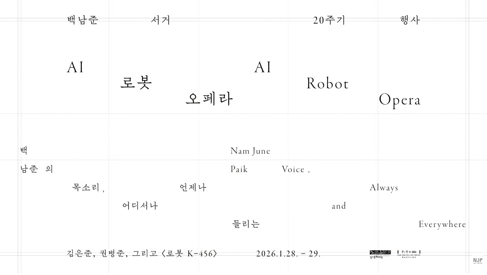
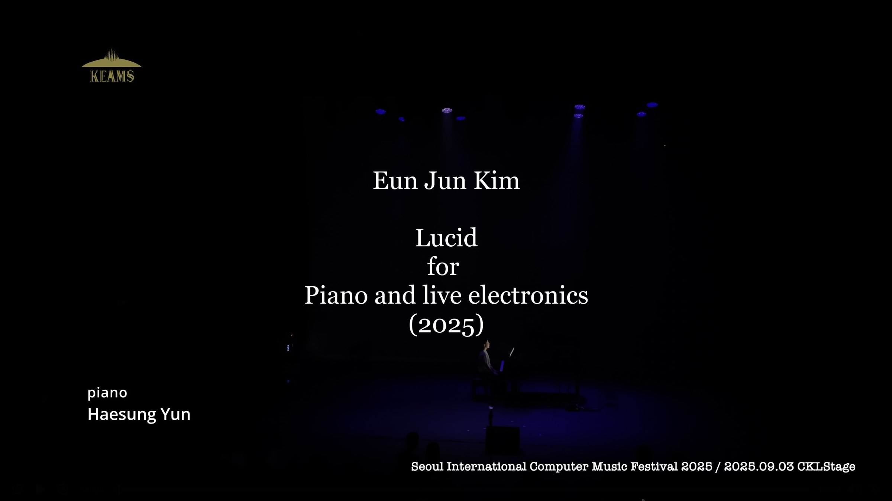
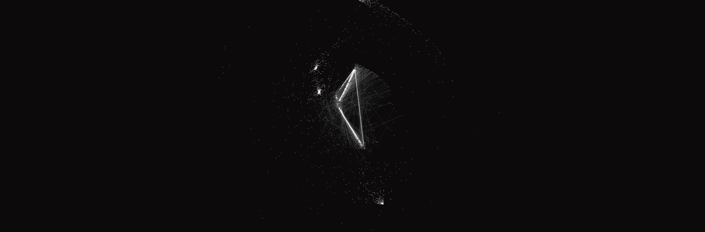
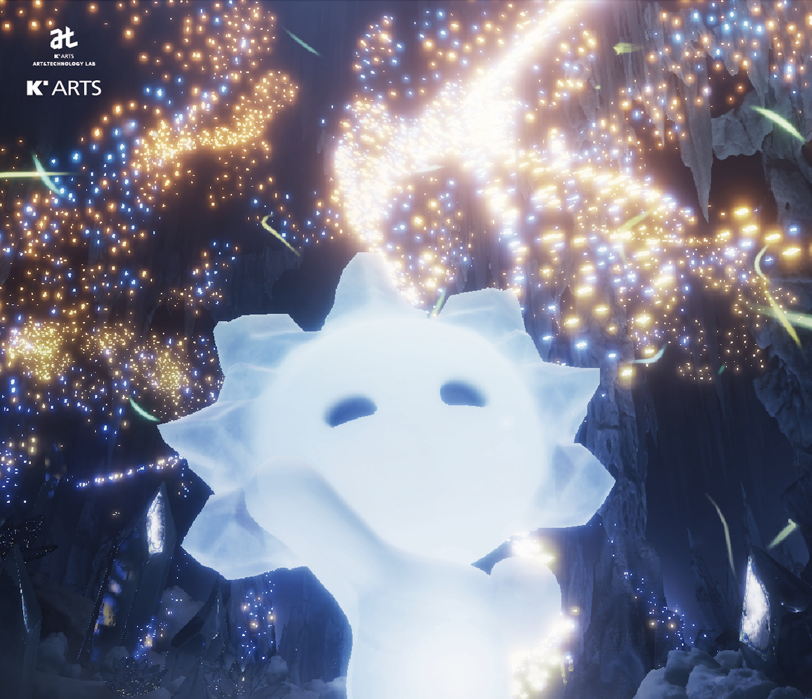
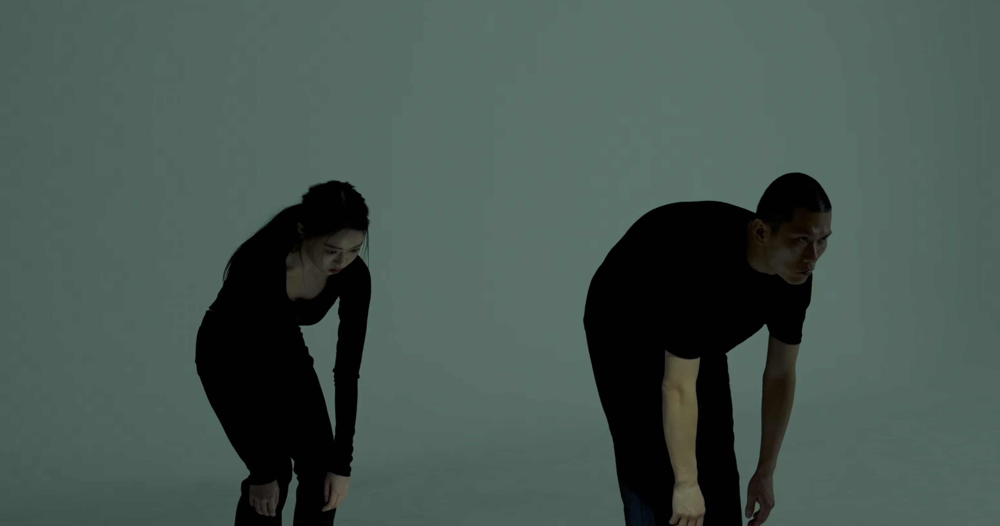
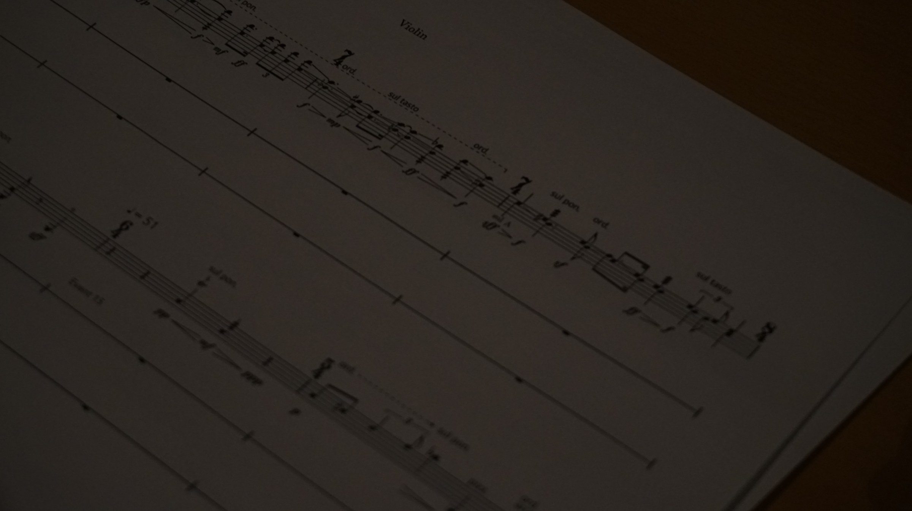
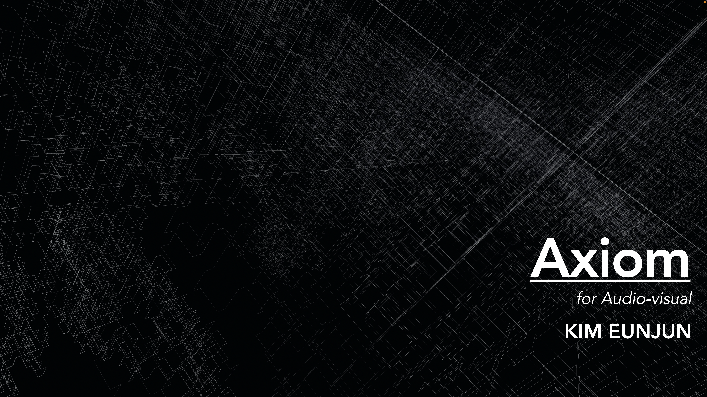
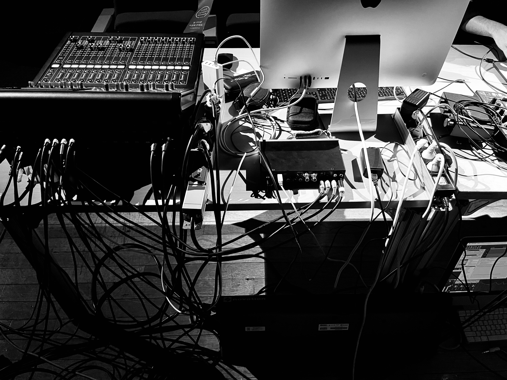
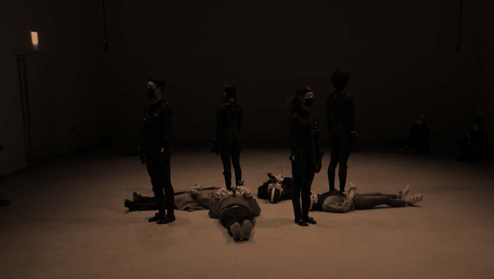
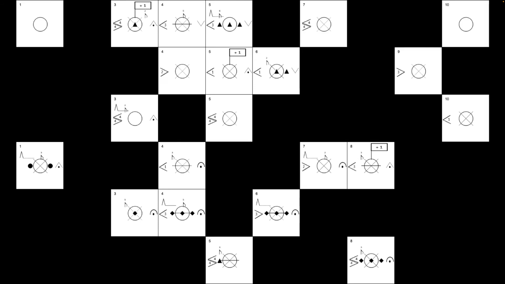

Composer & Sound Artist
소리로 기술과 예술의
새로운 감각을 탐구합니다.
Exploring new sensibilities
in technology and art through sound.
[Electro-acoustic]
2026
[Electro-acoustic]
2025
[Fixed Media]
2024
[Collaborative Work]
2024
[Live Electronics]
2023[Collaborative Work]
2022
[Electro-acoustic]
2022
[Live Electronics]
2021
[Live Electronics]
2021
[Collaborative Work]
2021
[Fixed Media]
2020
EunJun Kim is a composer whose work explores the intersection of music, media, and technology, with a primary focus on computer music. His practice spans electronic music performance, sound installation, audiovisual art, and performance music within VR and metaverse environments, emphasizing hybrid forms that integrate artistic and technological approaches.
Kim is particularly interested in incorporating artificial intelligence, sensor data, and human movement into musical and visual expression. His research investigates how sound, space, and performance can interact dynamically, often by designing systems that generate or manipulate audio and visual elements in real time based on physical or environmental input.
His creative inquiries revolve around questions such as:
· How can technology expand the structural possibilities of musical composition?
· In what ways can music extend or transform sensory perception?
· How can artificial intelligence function as a creative collaborator in the artistic process?
He is also deeply engaged in exploring spatial sound design, nonlinear performance structures, real-time interactive systems, and multichannel audio environments, seeking ways to construct musical narratives within technologically mediated frameworks. Currently, his research focuses on applying AI to music composition and performance, aiming to understand how human creators and algorithmic systems can collaborate in shaping new sonic and performative experiences.
김은준은 음악, 미디어, 기술의 경계를 넘나들며 컴퓨터 음악을 중심으로 창작과 연구를 이어가는 작곡가입니다. 그의 작업은 전자음악 공연, 사운드 설치, 오디오비주얼 아트, 그리고 VR/메타버스 기반의 퍼포먼스 음악 등 다양한 매체와 기술을 융합한 형태로 확장되어 왔습니다.
김은준은 인공지능, 센서 데이터, 인간의 움직임과 같은 기술적 요소들을 음악과 시각예술에 통합하는 데에 관심이 많으며, 이를 통해 사운드와 퍼포먼스, 공간 사이의 상호작용을 탐구합니다. 특히, 인간의 움직임이나 환경 데이터를 수집하여 실시간으로 소리와 이미지를 생성하거나 조작하는 시스템 설계 및 작곡 방식에 집중해 왔습니다.
그의 연구는 다음과 같은 질문들을 중심으로 전개됩니다:
· 기술은 음악의 구성 방식에 어떤 새로운 가능성을 제시할 수 있는가?
· 감각의 경계를 확장하는 음악 경험은 어떻게 설계될 수 있는가?
· 인공지능은 예술가의 창작 도구로서 어떻게 작동할 수 있는가?
또한 그는 공간 기반 사운드 디자인, 비정형 공연 구조, 실시간 인터랙티브 시스템, 멀티채널 오디오 등 기술적 구조 안에서 음악적 서사를 구성하는 방식에도 깊은 관심을 갖고 있습니다. 현재는 특히 인공지능 기술을 음악 작곡 및 사운드 퍼포먼스에 적용하는 방법을 연구하고 있으며, 음악 내에서 인간 창작자와 알고리즘이 어떻게 협력할 수 있는지, 그 경계를 실험하는 작업을 지속하고 있습니다.